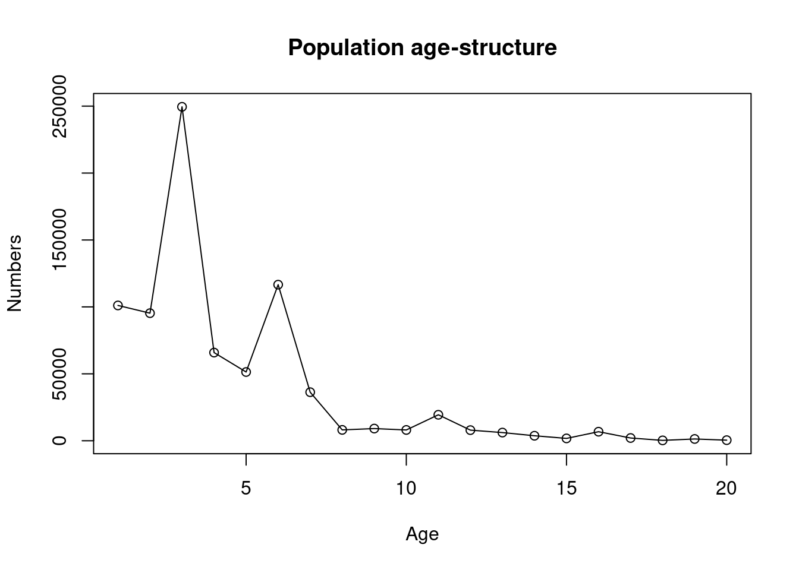
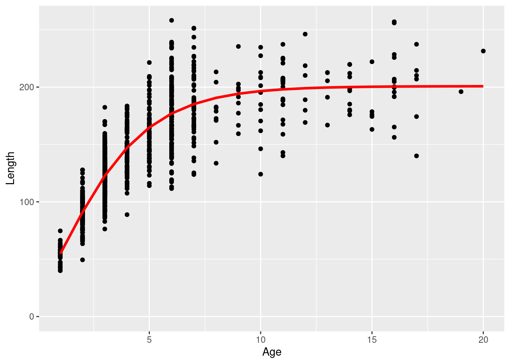
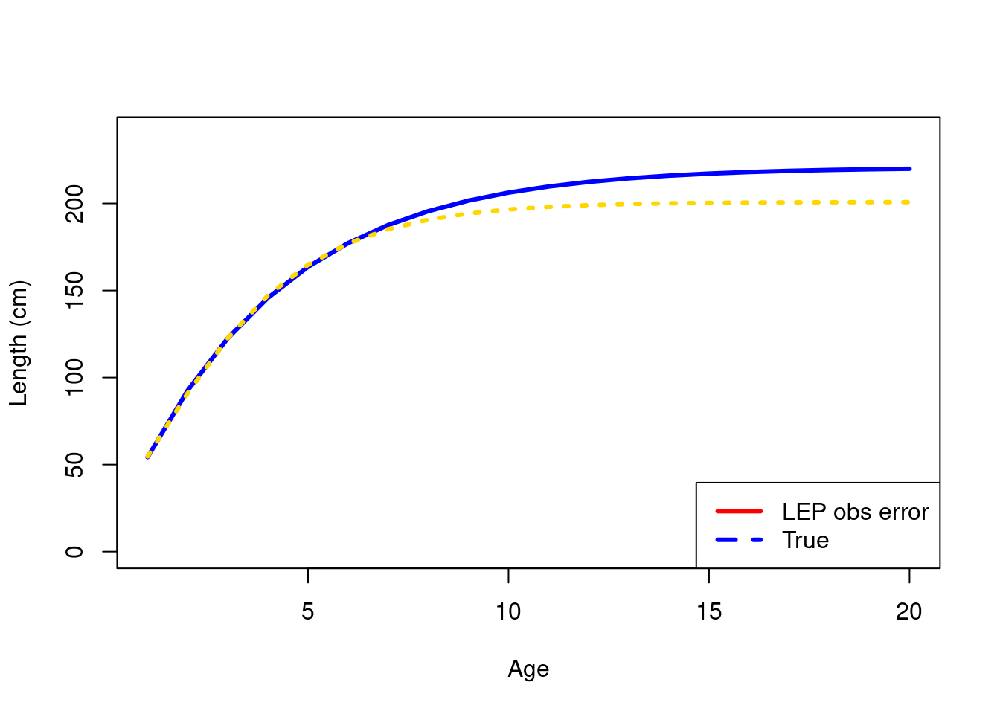

Chapter 9 Tagging data and studies
Since 1972 there have been approximately 400 000 sablefish tagged in Alaska waters, of which over 38 500 have been recovered. Although there is extensive and long term tagging data, this information is not currently directly included in the stock assessment (Goethel et al. 2021).
Historical publications investigating movement of Alaskan sablefish include Heifetz and Fujioka (1991), Hanselman et al. (2015)
9.1 Integrating tagging observations in spatial age-structured models
This project intends to explore a range of methods for utilising tag-recovery observations in spatially disaggregated age-structured stock assessments.
Tagging things to consider with relevant references
- Years to retain tagged fish in the partition “After approximately 9 yr the number of recaptures was small and contributed more to the variance associated with the trends in movement than an improved understanding of these trends” Beamish and McFarlane (1988)
- Reporting rates (Heifetz and Maloney 2001)
- Scan detection rates. Is this not a factor of reporting rates?
- Mixing time and how to deal with it?
- Tag loss “tag loss in the fist year was approximately 10% and after that approximately 2% per year.” Beamish and McFarlane (1988)
- Release conditioning vs recapture conditioning (Vincent, Brenden, and Bence 2020; McGarvey and Feenstra 2002)
- likelihood choice? (Hanselman et al. 2015)
Tag recovery observations
There are tow types of tag-recovery observations that we will consider in this work, tag-release conditioned and tag-recapture conditioned. This conditioning relates to whether we relate recoveries to the release event or whether we only look at the recoveries relative to other recoveries within a year (Vincent, Brenden, and Bence 2020; McGarvey and Feenstra 2002). This conditioning relates more to the log-likelihood formulation rather than the model expected values. We should also explore two different approaches regarding the scanned fish of which tag-recoveries are a subset. The first is recoveries were entirely from a fishery which requires some understanding or assumptions on reporting rates. The other method assumes scanned fish are known, which is the approach used in the Casal2 (Doonan et al. 2016) stock assessment program. This information can be recorded if the scanning is done either by observers who are recording LF’s for the catch or scientific/trained staff when shed sampling landed catch. Both these scanning approaches will require an assuming or information on detection rates.
9.2 Growth estimation using the Laslett–Eveson–Polacheck (LEP) method
Going to investigate the use of “Laslett–Eveson–Polacheck (LEP)” based on Laslett, Eveson, and Polacheck (2002) & Eveson, Laslett, and Polacheck (2004) as described in Aires-da-Silva et al. (2015).
The idea is to use a single growth model that fits to two observational data sets (ideally within the assessment, however we will start outside for now. When including it in the assessment you will also have LF data to help inform growth). The first will describe age-at-length data from direct ageing. The second will be length increment data from tagging experiments.
Age-at-length growth model
We start by using the Richards growth curve following Aires-da-Silva et al. (2015) (but this could be extended). The Richards growth formulation follows
\[\begin{equation} \bar{l}_{a} = L_{\infty} \left( 1 + \frac{1}{p} \exp \{-K(a - a_0)\}\right)^{-p} \tag{9.3} \end{equation}\] where, \(\bar{l}_{a}\) is the mean length at age \(a\), \(L_{\infty}\) is the asymptotic length, \(K\) is the growth coefficient and \(p\) is a shape parameter that is related to the ratio \(\bar{l}_{a} / L_{\infty}\) at the inflexion point.
Tag recapture growth data
| Symbol | Description |
|---|---|
| \(l_{1,i}\) | length of individual \(i\) at release |
| \(l_{2,i}\) | length of individual \(i\) at recapture |
| \(a_{1,i}\) | age of individual \(i\) at release. Denoted as \(A\) in Aires-da-Silva et al. (2015) |
| \(a_{2,i}\) | age of individual \(i\) at recapture |
| \(\Delta_t\) | Time at liberty \(\Delta_t = a_{2,i} - a_{1,i}\) |
Just one comment on notation!!! in most all the papers that use this method, they ignore the individual notation of \(A\). That is not an issue in general however it confuses me when they describe the prior on this.
The sub-models for the release and recapture lengths follow, \[\begin{equation} l_{1,i} = L_{\infty} \left( 1 + \frac{1}{p} \exp \{-K(a_{1,i} - a_0)\}\right)^{-p} \tag{9.4} \end{equation}\]
and, \[\begin{equation} l_{2,i} = L_{\infty} \left( 1 + \frac{1}{p} \exp \{-K(a_{1,i} + \Delta_t - a_0)\}\right)^{-p} \tag{9.5} \end{equation}\]
The above growth model assumes that we know the age at recovery \(a_{2,i}\). The problem we have is, we have 22 569 tag recoveries with length information but only a handful of these have been aged. This is dealt with by modelling \(a_{1,i}\) as a random effect i.e., \(a_{1,i} \sim LN \left(\mu, \sigma^2\right)\).
What confuses is me here is how to assign a hyper distribution like the one above for the random effect variables \(a_{1,i}\). \(a_{1,i}\) is expected to vary quite a bit because tagged fish at release have a broad length frequency and thus is expected to have a broad age at release? (ask someone about this because I may be misunderstanding something).
Simulation test the “LEP” method
## going to use parameters from Aires-da-Silva et al. (2015) Table 1 integrated analysis
L_inf = 200.8
k = 0.44
t_0 = 1.26
p = -4.27
cv = 0.15 ## cv of length around length at age
## selectivity paraemters
sel_a50 = 1.3
sel_ato95 = 0.8
## sample sizes for simulation
n_sample_release = 1000
n_sample_recoveries = 1000 * 0.1 ## about the recovery rate from sablefish data
n_sample_age_length = 1000
## generate a pseudo age structure
set.seed(123)
R_0 = 200000
M = 0.29
ages = 1:20
n_ages = length(ages)
#plot(ages, mean_length_at_age, type = "l", lwd = 3, xlab = "Age", ylab = "Length (cm)")
sel_at_age = logis(ages, sel_a50, sel_ato95)
## numbers at age
N_age = vector(length = n_ages, "numeric")
for (age_ndx in 1:n_ages)
N_age[age_ndx] = R_0 * exp(-ages[age_ndx] * M) * exp(rnorm(1,0,0.7))
N_age = N_age * sel_at_age ## vulnerable numbers at age
plot(ages, N_age, ylab = "Numbers", xlab = "Age", main = "Population age-structure", type = "o")
## plot growth
mean_length_at_age = richards_growth(ages, p, k, t_0, L_inf)
## randomly sample 1000 individuals with replacement for otolithing no ageing error!!
##
individual_age_length_df = NULL
for(i in 1:n_sample_age_length) {
age_i = sample(1:n_ages, size = 1, prob = N_age)
mean_length_i = richards_growth(age_i, p, k, t_0, L_inf)
length_i = rnorm(1, mean_length_i, mean_length_i * cv)
temp_df = data.frame(age = age_i, length = length_i)
individual_age_length_df = rbind(individual_age_length_df, temp_df)
}
## Simulate a tag-recapture experiment
# releases
release_ages = sample(1:n_ages, size = n_sample_release, prob = N_age, replace = T)
release_mean_lengths = richards_growth(release_ages, p, k, t_0, L_inf)
release_lengths = rnorm(n_sample_release, release_mean_lengths, release_mean_lengths * cv)
individual_release_df = data.frame(release_age = release_ages, release_length = release_lengths, release_mean_length = release_mean_lengths)
individual_release_df$fish_id = 1:nrow(individual_release_df)
# recaptures sample uniformly without replacement
fish_ndx = sample(1:nrow(individual_release_df), size = n_sample_recoveries, replace = F)
individual_recovery_df = subset(individual_release_df, subset = individual_release_df$fish_id %in% fish_ndx)
## time-at liberty days randomly recovered on average between 100-600 days
individual_recovery_df$time_at_liberty = rpois(n = n_sample_recoveries, lambda = runif(n_sample_recoveries,100,600))
individual_recovery_df$recovery_age = individual_recovery_df$release_age + individual_recovery_df$time_at_liberty/365
## how to add the length increment between release and recovery?
individual_recovery_df$recovery_mean_length = richards_growth(individual_recovery_df$recovery_age, p, k, t_0, L_inf)
individual_recovery_df$recovery_mean_length_increment = with(individual_recovery_df, recovery_mean_length - release_mean_length)
individual_recovery_df$recovery_length = with(individual_recovery_df, release_length + rlnorm(n_sample_recoveries, log(recovery_mean_length_increment), cv))
individual_recovery_df$growth_change = individual_recovery_df$recovery_length - individual_recovery_df$release_length
## visualise length at age samples
ggplot(individual_age_length_df, aes(x = age, y = length)) +
geom_point() +
geom_line(data= data.frame(length = mean_length_at_age, age = ages), aes(x = age, y = length), col = "red", linewidth = 1.2, inherit.aes = F) +
labs(x = "Age", y = "Length") +
ylim(0,NA)
Assumptions in the above OM follow.
\[ l_{1,i} \sim \mathcal{N} \left(\bar{l}_{1,a}, \sigma = \bar{l}_{1,a} \times cv\right) \] where the mean length at age release (\(\bar{l}_{1,a}\)) follows the Richards growth curve defined in Equation (9.3). The age used to derive the mean length at age was a random sample with replacement from the population in shown in the earlier figure. Time at liberty was drawn from a Poisson distribution with a rate parameter randomly drawn from a uniform distribution between 100-600 days. The age at recovery \(a_{2,i} = a_{1,i} + \Delta_t\). An approximation was made when calculating the length at recovery. The length increment (\(l_{\Delta_t}\)) was simulated using a Log Normal distribution with the median set based on the difference between mean length at release age and mean length at recovery age. This was to ensure all recovered fish positively grew at a rate expected by the growth model (less than ideal but will do for now). \[ l_{i,\Delta_t} \sim \mathcal{LN} \left(\ln (\bar{l}_{a_{2,i}} - \bar{l}_{a_{1,i}}), \sigma = cv\right) \]
\[ l_{2,i} = l_{1,i} + l_{i, \Delta_t} \] In theory we can now pass this data to our LEP model to back estimate growth parameters.
setwd(file.path("TMB"))
#sink(file = "compile_output.txt")
compile(file = "LEPgrowth_model.cpp", flags = "-Wignored-attributes -O3")
#sink()
dyn.load(dynlib("LEPgrowth_model"))
#setwd(DIR$book)# data
data = list()
data$ages_from_age_length = individual_age_length_df$age
data$lengths_from_age_length = individual_age_length_df$length
data$lengths_at_release = individual_recovery_df$release_length
data$lengths_at_recovery = individual_recovery_df$recovery_length
data$time_at_liberty = individual_recovery_df$time_at_liberty / 365
data$ages_for_report = ages;
data$p_bounds = c(-20, 20)
data$t0_bounds = c(-6, 4)
# parameters
parameters = list()
parameters$ln_cv_length_at_age = log(cv)
parameters$ln_k = log(k)
parameters$ln_L_inf = log(L_inf)
parameters$logit_p = logit_general(p, data$p_bounds[1],data$p_bounds[2])
parameters$logit_t0 = logit_general(t_0, data$t0_bounds[1],data$t0_bounds[2])
parameters$ln_cv_length_release = log(0.1)
parameters$ln_cv_length_recovery = log(0.1)
parameters$ln_age_at_release = log(individual_recovery_df$release_age)
parameters$ln_mu_age_release = log(3)
parameters$ln_sd_age_release = log(1)
obj_mixed_all <- MakeADFun(data, parameters, random = "ln_age_at_release", DLL="LEPgrowth_model")MLE_mixed_all = nlminb(start = obj_mixed_all$par, objective = obj_mixed_all$fn, gradient = obj_mixed_all$gr)
MLE_mixed_all$convergence
MLE_mixed_all_rep = obj_mixed_all$report(obj_mixed_all$env$last.par.best)
MLE_mixed_all_sd_rep = sdreport(obj_mixed_all)
plot(ages, MLE_mixed_all_rep$mean_length_at_age, type = "l", lwd = 3, col = "red", xlab = "Age", ylab = "Length (cm)", ylim = c(0, 240))
lines(ages, mean_length_at_age, col = "blue", lty = 3, lwd = 3)
legend('bottomright', legend = c("LEP obs error","True"), col = c("red", "blue"), lty = c(1,2), lwd = 3)
Next steps
- Check sensitivity to the model to starting parameters
- Repeat with different sample sizes
- Repeat with a truncated age-structure for the age-length data using a selectivity
- Look at Sablefish data and see if the LEP approach can be used to it
- Explore alternative growth models i.e., Schnute (1981)